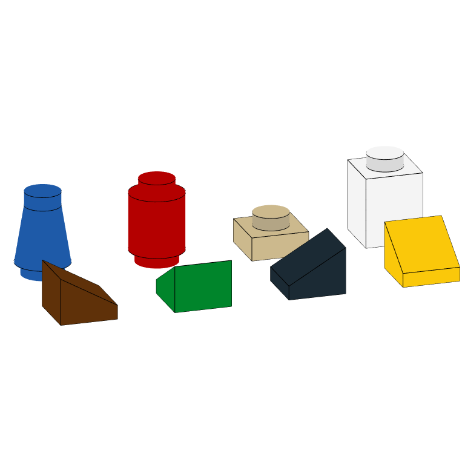
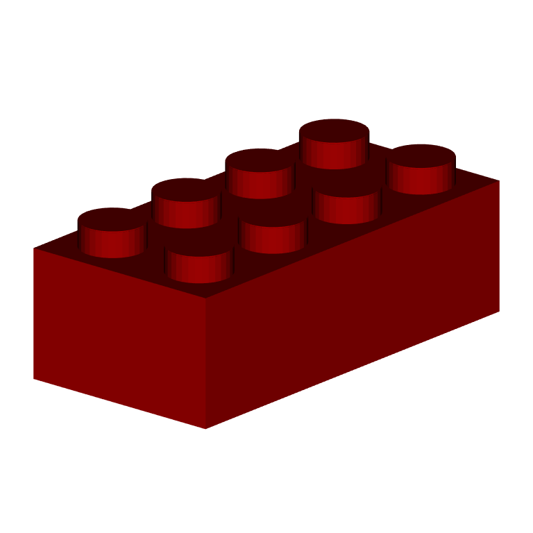
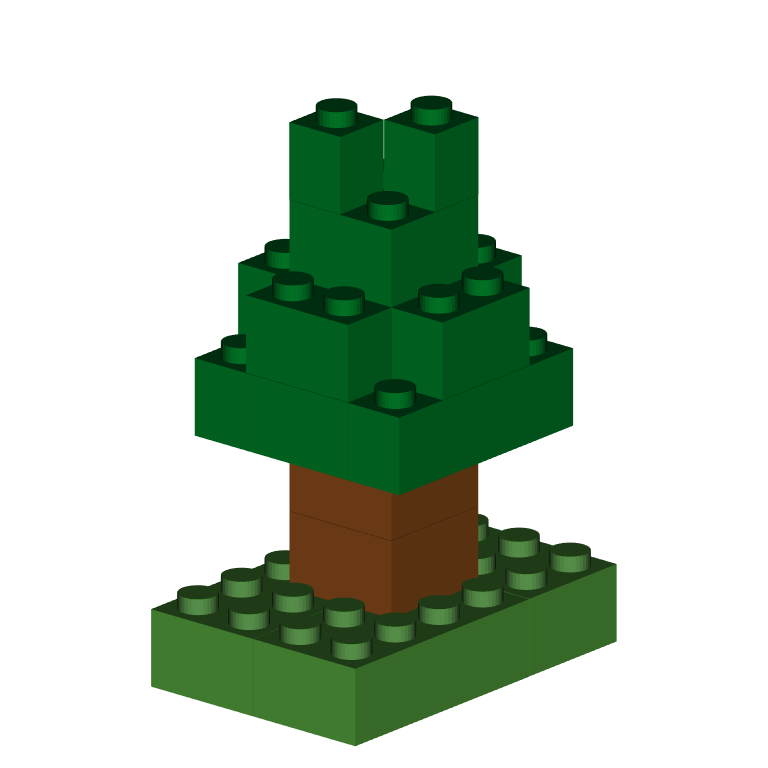
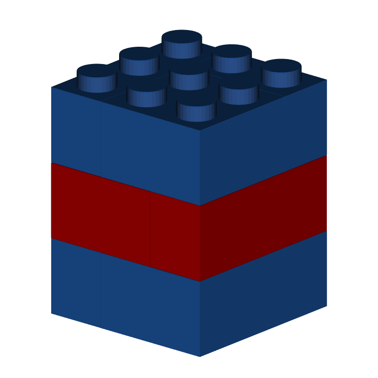
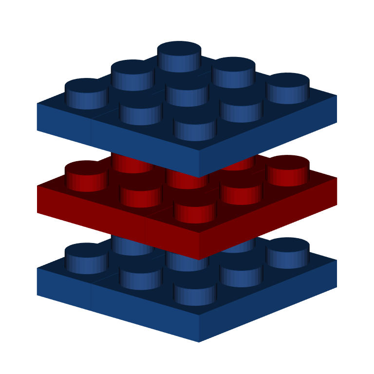
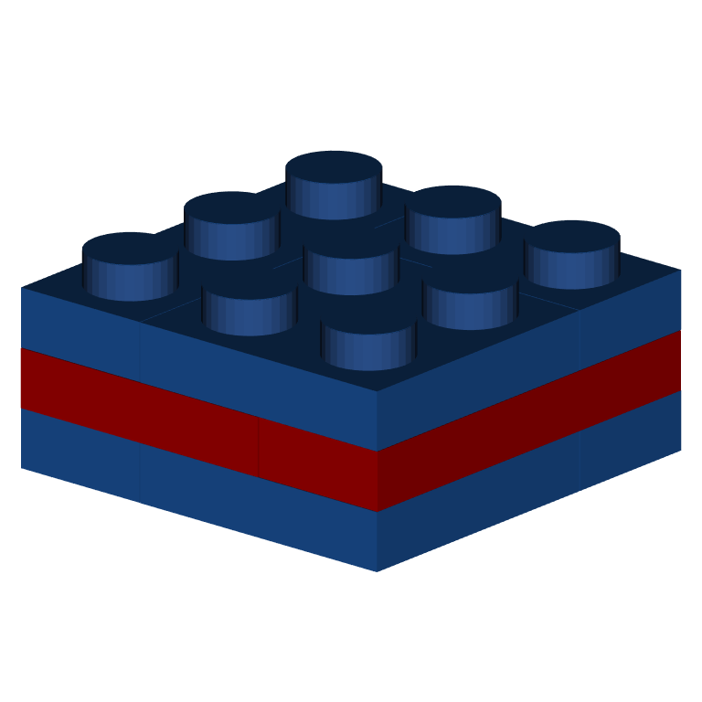
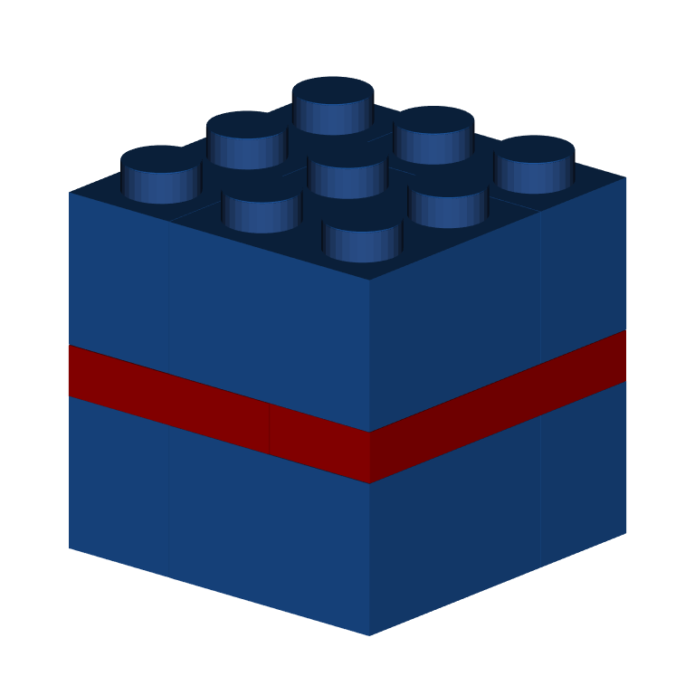

Getting started
Models in brickr default to rendering rectangular LEGO bricks. Other LEGO shapes are possible in both bricks_from_coords() and bricks_from_table() or bricks_from_excel().
Piece shapes in models are driven the piece_type ID.
All piece options
Currently there are 5 unique piece shapes in brickr. Some shapes can have different orientations, which is also determined by the piece_type column.
| Piece | piece_type | Area | Height | Orientation |
|---|---|---|---|---|
| Brick (classic) | ‘b’ | any | 1 | – |
| Plate (flat brick) | ‘p’ | any | 1/3 | – |
| Round 1x1 (cylinder) | ‘c1’ | 1 | 1 | – |
| Round 1x1 (cone) | ‘c2’ | 1 | 1 | – |
| Cheese slope | ‘w1’ | 1 | 2/3 | north |
| Cheese slope | ‘w2’ | 1 | 2/3 | east |
| Cheese slope | ‘w3’ | 1 | 2/3 | south |
| Cheese slope | ‘w4’ | 1 | 2/3 | west |
expand.grid( x = 1:4 * 2, y = 1:2 * 2, z = 1) %>% dplyr::mutate(Color = head(lego_colors$Color, 8), piece_type = c("b", "p", "c1", "c2", "w1", "w2", "w3", "w4")) %>% bricks_from_coords() %>% build_bricks(rgl_lit = FALSE, outline_bricks = TRUE) rgl::par3d(userMatrix = rgl::rotate3d(rgl::par3d("userMatrix"), 1.1*pi, 0, 0 ,1))

Bricks from coordinates
Changing the piece type in bricks_from_coords() is the most straight-forward, so let’s begin there.
Changing the default brick
Start with a simple programmed model to create a classic 2x4 red brick.
expand.grid( x = 1:4, y = 1:2, z = 1, Color = "Bright red", stringsAsFactors = FALSE ) %>% bricks_from_coords() %>% build_bricks() rgl::par3d(userMatrix = rgl::rotate3d(rgl::par3d("userMatrix"), 1.1*pi/4, 0, 0 ,1))

Add a new column, piece_type, you can change this default shape. Set piece_type = "p" to create a 2x4 plate instead. A LEGO plate is 1/3 the height of a brick.
expand.grid( x = 1:4, y = 1:2, z = 1, Color = "Bright red", stringsAsFactors = FALSE ) %>% dplyr::mutate(piece_type = "p") %>% bricks_from_coords() %>% build_bricks() rgl::par3d(userMatrix = rgl::rotate3d(rgl::par3d("userMatrix"), 1.1*pi/4, 0, 0 ,1))

Bricks from tables
Including piece options in bricks_from_table() or bricks_from_excel() is slightly more involved because the input tables are two-dimensional for easier drawing.
In these functions, use the input piece_table to supply an identically shaped table with optional piece_type ids instead of numbers.
Start with this data frame called tree_or_mushroom.
tree_or_mushroom <- tibble::tribble( ~Level, ~X1, ~X2, ~X3, ~X4, ~X5, ~X6, "A", 1, 1, 1, 1, 1, 1, "A", 1, 1, 1, 1, 1, 1, "A", 1, 1, 1, 1, 1, 1, "A", 1, 1, 1, 1, 1, 1, "B", 0, 0, 0, 0, 0, 0, "B", 0, 0, 2, 2, 0, 0, "B", 0, 0, 2, 2, 0, 0, "B", 0, 0, 0, 0, 0, 0, "C", 0, 0, 0, 0, 0, 0, "C", 0, 0, 2, 2, 0, 0, "C", 0, 0, 2, 2, 0, 0, "C", 0, 0, 0, 0, 0, 0, "D", 0, 3, 3, 3, 3, 0, "D", 0, 3, 3, 3, 3, 0, "D", 0, 3, 3, 3, 3, 0, "D", 0, 3, 3, 3, 3, 0, "E", 0, 0, 3, 3, 0, 0, "E", 0, 3, 3, 3, 3, 0, "E", 0, 3, 3, 3, 3, 0, "E", 0, 0, 3, 3, 0, 0, "F", 0, 0, 0, 0, 0, 0, "F", 0, 0, 3, 3, 0, 0, "F", 0, 0, 3, 3, 0, 0, "F", 0, 0, 0, 0, 0, 0, "G", 0, 0, 0, 0, 0, 0, "G", 0, 0, 3, 0, 0, 0, "G", 0, 0, 0, 3, 0, 0, "G", 0, 0, 0, 0, 0, 0 ) brick_colors <- tibble::tribble( ~`.value`, ~Color, 1, "Bright green", 2, "Dark orange", 3, "Dark green" ) tree_or_mushroom %>% bricks_from_table(brick_colors) %>% build_bricks() rgl::par3d(userMatrix = rgl::rotate3d(rgl::par3d("userMatrix"), 1.1*pi/4, 0, 0 ,1))

If you want more a tree with more texture, you can change all the “leaves” from rectangular bricks into cylinder bricks.
tree_or_mushroom_pieces <- tree_or_mushroom %>% dplyr::mutate_at(dplyr::vars(dplyr::starts_with("X")), ~ifelse(.==3, "c2", "b")) #If the color is the dark green, make a cone, else brick tree_or_mushroom %>% bricks_from_table(brick_colors, piece_matrix = tree_or_mushroom_pieces) %>% build_bricks() rgl::par3d(userMatrix = rgl::rotate3d(rgl::par3d("userMatrix"), 1.1*pi/4, 0, 0 ,1))

Bricks from Excel
For bricks_from_excel(), you only have to supply piece_type ids when you do NOT want the classic brick. The best option here is to create your model in the Excel template in the brickr toybox GitHub repo. Once complete, duplicate the sheet and change any color values to piece_type IDs.
Mid-level bricks
Because different piece types have different heights, your models might have unintentional gaps when using pieces that are less than 1-unit tall.
Start with this LEGO cube.
expand.grid( x = 1:3, y = 1:3, z = 1:3, color = "Bright blue" ) %>% dplyr::mutate(color = ifelse(z==2, "Bright red", as.character(color))) %>% bricks_from_coords() %>% build_bricks() rgl::par3d(userMatrix = rgl::rotate3d(rgl::par3d("userMatrix"), 1.1*pi/4, 0, 0 ,1))

A problem arises when we change these bricks to plates. Each z (Level) continues to be drawn at the same height and the plates are no longer stacked together.
expand.grid( x = 1:3, y = 1:3, z = 1:3, color = "Bright blue" ) %>% dplyr::mutate(color = ifelse(z==2, "Bright red", as.character(color)), piece_type = "p") %>% bricks_from_coords() %>% build_bricks() rgl::par3d(userMatrix = rgl::rotate3d(rgl::par3d("userMatrix"), 1.1*pi/4, 0, 0 ,1))

Each z (Level) is the height of a brick, but plates and cheese slopes have height less than a brick. To stack consecutive bricks that are now all full height, you’ll need to use a new column, mid_level. The mid_level column can be added anywhere in a bricks_from_coords() input or as the 2nd column after Level in the matrix_table input in bricks_from_table() or bricks_from_excel().
By default, all bricks and pieces are located at mid_level = 0, which is the base of the z (Level). All z (Level) values have 3 possible mid_level values: 0, 1, 2.
Using integer division and mods, you can convert all levels uniformly to Level + mid_levels. In future versions of brickr, there will be helper functions.
expand.grid( x = 1:3, y = 1:3, z = 1:3, color = "Bright blue" ) %>% dplyr::mutate(color = ifelse(z==2, "Bright red", as.character(color)), piece_type = "p") %>% dplyr::mutate(mid_level = (z-1) %% 3, z = (z-1) %/% 3 +1) %>% bricks_from_coords() %>% build_bricks() rgl::par3d(userMatrix = rgl::rotate3d(rgl::par3d("userMatrix"), 1.1*pi/4, 0, 0 ,1))

It’s also possible to mix and match different z (Level) and mid_level combinations to stack plates with bricks. There are various ways to do this, depending on the complexity and your comfort with tidyverse data manipulation.
expand.grid( x = 1:3, y = 1:3, z = 1:3, color = "Bright blue" ) %>% dplyr::mutate(color = ifelse(z==2, "Bright red", as.character(color)), piece_type = ifelse(z==2, "p", "b")) %>% dplyr::mutate( mid_level = dplyr::case_when( z %in% 1:2 ~ 0, z == 3 ~ 1 ), z = dplyr::case_when( z %in% 2:3 ~ 2, TRUE ~ 1 )) %>% bricks_from_coords() %>% build_bricks() rgl::par3d(userMatrix = rgl::rotate3d(rgl::par3d("userMatrix"), 1.1*pi/4, 0, 0 ,1))
